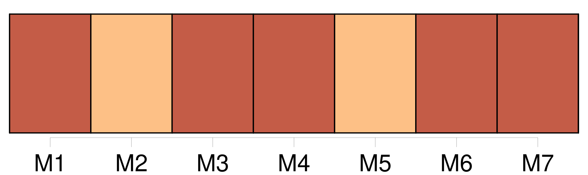

Longueur nb maillons : 27 mentions |
 |
Où donc était [notre] chambre d'enfant, avec sa fenêtre grillagée, ses murs tapissés de papier à grosses fleurs, et sa cheminée tout encombrée de photographies? [53 phrases] C'est grand-mère qui [nous] avait élevés tandis que [nos] parents travaillaient. [1 phrases] Ainsi, tout avait bien marché, [nos] parents très unis ne se plaisaient qu'auprès de [nous] [Notre] père passait ses veillées à fabriquer des jouets pour les petits.
Et pendant les vacances [notre] mère [nous] emmenait dans la petite maison qu'elle possédait, tout près de chez son frère, que [nous] appelions oncle meunier, et dont le moulin tournait sur une jolie rivière descendant à la Loire. [1 phrases]
Des discussions, puis de véritables disputes s'étaient élevées entre [nos] parents et cela n'avait fait qu'augmenter jusqu'au jour où face à face, comme deux ennemis aveuglés de rage, ils avaient été si près de se frapper. [2 phrases] Firmin était certainement celui de [nous] qui avait le plus souffert de la désunion de [nos] parents. [3 phrases] [Notre] mère croyant tous [ses enfants] endormis pleurait sans contrainte dans la chambre voisine. [3 phrases] [Notre] père, pris de pitié sans doute, avait dit des mots consolants, et peu à peu le silence était revenu. [44 phrases] Pour éviter la contagion, [nos] parents avaient installé les trois autres à l'autre bout de l'appartement avec défense d'entrer dans notre chambre. [7 phrases]
Angèle se lassa de les entendre ; malgré la défense de [nos] parents elle entr'ouvrit soudain notre porte et nous dit l'air indigné : [112 phrases] C'est, pour elle, des projets touchant l'avenir de son enfant, et, pour moi, l'espoir de voir arriver aux prochaines vacances, les petits avec [nos] parents réconciliés à jamais. [26 phrases] Elle prétend que c'est pour faire des économies à [nos] parents. [3 phrases] Si c'est ça qu'elle appelle faire des économies à [nos] parents. [96 phrases]
Dans ces moments -là les jumeaux restaient tranquilles pour l'écouter, et [nos] parents eux -mêmes prenaient plaisir à le voir et à l'entendre. [4 phrases]
Et j'entendais encore le rire éclatant de [nos] parents, et je me souvenais du claquement joyeux des baisers répétés qu'ils avaient mis sur [nos] joues, ce soir -là, au moment du coucher. [70 phrases]
Ils mirent au lit les jumeaux, las de grand air et de jeux, et après [nous] avoir tous embrassés très tendrement, ils reprirent le chemin de la gare accompagnés seulement d'oncle meunier. [1 phrases] Je suivais par la pensée [nos] parents remontant la route. [20 phrases] Pendant le temps que durerait le procès, elle allait [nous] laisser sous la surveillance de son frère. [3 phrases]
Je les prévins seulement que [nous] allions rester longtemps au moulin, par mesure d'économie. |

|
Il est possible de télécharger la ressource sur la page Ortolang |
Si vous avez des questions ou vous voyez des erreurs, merci d'envoyer un mail à silvia.federzoni89@gmail.com |